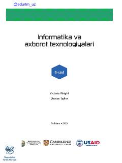

9I9-sinf o'quvchilari uchun mo'ljallangan zamonaviy informatika va axborot texnologiyalari darsligi.
Ushbu darslik 9-sinf o'quvchilari uchun mo'ljallangan bo'lib, Cambridge University Press nashriyotining IGCSE ICT dasturi asosida tayyorlangan. Kitob kompyuter tizimlari, axborot texnologiyalari, dasturlash asoslari va amaliy ko'nikmalarni rivojlantirishga qaratilgan nazariy hamda amaliy mashg'ulotlarni o'z ichiga oladi.